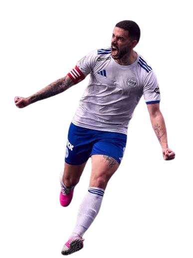

Presidente e Artilheiro do G3X, bi-campeão do mundo com a Seleção Brasileira na Kings World Cup Nations e campeão mundial de clubes pelo G3X.

Somatório de todas as competições disputadas, do primeiro split da Kings League Brasil ao título com a Seleção.
Jogos, gols, assistências, MVPs e média em cada torneio — do G3X na Kings League Brasil à Seleção na Kings World Cup Nations.
O total geral soma todas as camisas vestidas; o recorte G3X isola apenas a produção pelo clube.